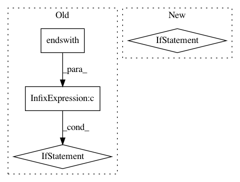

1d9f12ae9b461689b5019b711c597d1d06c13a72,test_video.py,,,#,49
Before Change
assert fps!=0, "Fps is zero, Please enter proper video path"
pbar = tqdm(total = content_video_length)
if(str(style_path).endswith(".mp4") or str(style_path).endswith(".mpg") or str(style_path).endswith(".avi")):
style_video = cv2.VideoCapture(args.style_path)
style_video_length = int(style_video.get(cv2.CAP_PROP_FRAME_COUNT))
assert style_video_length==content_video_length, "Content video and style video has different number of frames"
output_video_path = output_name = output_dir / "{:s}_stylized_{:s}{:s}".format(
content_path.stem, style_path.stem, args.save_ext)
After Change
style_video.release()
content_video.release()
if style_path.suffix in [".jpg", ".png", ".JPG", ".PNG"]:
output_video_path = output_dir / "{:s}_stylized_{:s}{:s}".format(
content_path.stem, style_path.stem, args.save_ext)
writer = imageio.get_writer(output_video_path, mode="I", fps=fps)
style_img = Image.open(style_path)
while(True):
ret, content_img = content_video.read()
if not ret:
break
In pattern: SUPERPATTERN
Frequency: 3
Non-data size: 4
Instances
Project Name: naoto0804/pytorch-AdaIN
Commit Name: 1d9f12ae9b461689b5019b711c597d1d06c13a72
Time: 2020-11-13
Author: levindabhi17@gmail.com
File Name: test_video.py
Class Name:
Method Name:
Project Name: ilastik/ilastik
Commit Name: e4c330615d355c6bbcef72a4358411e5718f25d3
Time: 2019-01-07
Author: emilmelnikov@gmail.com
File Name: ilastik.py
Class Name:
Method Name: main
Project Name: acl-org/acl-anthology
Commit Name: 7419eacac2dfa909b280881524e685d7ea4d7ec7
Time: 2020-04-24
Author: post@cs.jhu.edu
File Name: bin/add_attachments.py
Class Name:
Method Name: add_attachment